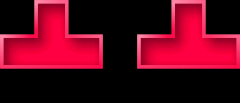

Quantro allows two different control styles: gamepad and gesture. Select and configure
your controls in the Settings menu.
Gamepad controls fill the touchscreen with "buttons" that can be tapped
or held to move the current piece, or activate other features. The gamepad control
style is designed for use with both hands (touching buttons with your thumbs)
on a device with a 4" or smaller screen. A thumbnail showing button locations
is always available on the pause-screen, and on the edges of the game window.
Gesture controls include a few touchscreen "buttons,"
but pieces are moved by dragging, swiping or tapping a finger anywhere else
on the screen surface. The gesture control style is designed for devices with
screens 5" or larger.
All basic piece movements are available in either control style, but some
advanced movement techniques, such as 180-turns and leans, are only available
with certain configurations. By default all advanced movement techniques are available.
Piece Movement
Pieces fall from the top of the screen at a speed determined by your current game level.
Until they lock into place, falling pieces can be maneuvered using moves, turns and
drops. Custom game modes can optionally allow flips.
A move shifts the piece horizontally by one block width. Advanced players might also use
quick-slides to move the piece the
entire width of the game field.
Moving in both directions.
A turn rotates the current piece by 90 degrees. The piece
will remain in the same location as it turns. If there isn't enough room available
for a piece to turn in-place, it will kick away from obstacles
to complete the rotation.
Advanced players can also use 180-degree turns.

Counter-clockwise and clockwise turns.
A drop will immediately lower the current piece to its eventual
landing position. Depending on how you've configured your controls, you may
have time to make a few final adjustments before the piece locks.
Dropping a piece will earn a small number of points.
A flip turns the piece top-over-bottom. Flips are only available
in custom game modes, where they might be used instead of or in addition to turns.

Flipping a piece.
In the gamepad control style, there is an onscreen "button" for each movement. These buttons fill the screen
from edge to edge; to avoid obscuring your view of the game, they are invisible until touched.
Tapping a move button will shift the piece horizontally by one block width.
If the button is held, the piece will quick-slide
in that direction until the block is released.
The turn buttons rotate the current piece by 90 degrees. Using both together allows
a 180-degree turns; holding a move button and/or
the drop button while turning will cause a lean in that direction.
The effect of the drop button can be configured in the
Settings menu. By
default, holding the button will make the piece fall more quickly until it lands,
and double-tapping the button will immediately drop the piece to its eventual
landing position and lock it in place (earning points based on the distance traveled).
When available, tapping the flip button will flip the current piece vertically.
Gesture Controls
In the gesture control style, piece movement is controlled by touchscreen drags,
swipes and taps.
To move a piece, touch the screen and drag your finger left or right. The piece
will follow your finger until it hits an obstacle. Swiping your finger left
or right will cause a quick-slide in that direction.
Tap to turn pieces. Tapping the left side of the screen will cause a counter-clockwise
turn, while the right side will turn the piece clockwise. Dragging a piece with
one finger and then tapping with a second will cause a
lean in the drag direction.
Pieces can be pulled down gradually by dragging a finger downward, or dropped to
the bottom of the screen with a downward swipe (earning points based on the distance traveled).
When available, swipe upward to flip a piece vertically.
Other Buttons
Certain actions are always controlled by an onscreen button, no matter the control style.
Pieces enter the game in a random order, but in most game modes a single
piece can be held in reserve for later use. Pressing the reserve button
will release the held piece, replacing the piece currently falling.
Different game types use reserve pieces in different ways. In most
Retro
games the reserve is initial empty. Once a piece is placed in reserve, it
can be swapped with the falling piece, placing it in reserve and the held piece
in play. In most Quantro games the reserve holds random
special pieces
which can provide a significant advantage if used skillfully. When used,
these pieces replace the currently falling piece, which will reappear as the next
piece to enter.
A few multiplayer game types, such as Bitter Pill,
replace the reserve button with an attack button. Attacks are typically
earned through skilled gameplay (e.g. clearing a certain number of rows, clearing
many rows at once, etc.). Once earned, tapping the attack button will unleash an
attack (specific to the game type) on your opponent's game.
Your current level and score are displayed
at the edge of the screen in an abbreviated form. Press and hold the score button to see
a more detailed description.
Opposite the score is a small thumbnail of your opponent's
field. Touch and hold this thumbnail to full-screen their field
(Versus mode only).
"Quantro," "Peace Ray," and the "Q" logo are trademarks of Peace Ray LLC.